La obra dramática de Lope de Vega, cuya edición crítica es el objetivo principal del Grupo de Investigación PROLOPE, ha sobrevivido y llegado a nosotros a través de sus textos en manuscritos e impresos de mejor o peor calidad. La labor del grupo PROLOPE consiste en recuperar, estudiar y restaurar dichos textos.
I. Los manuscritos
a. Los manuscritos autógrafos
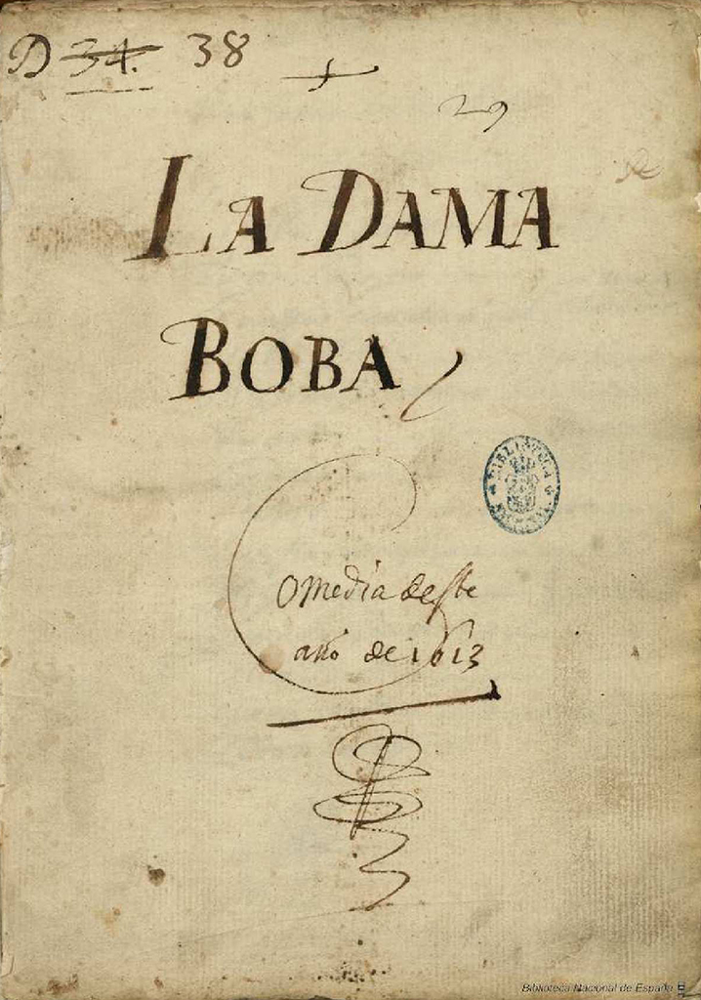
Se conservan unos cuarenta manuscritos autógrafos de Lope de Vega. Es una situación excepcional dentro de la literatura del Siglo de Oro. Diferentes razones han favorecido esta pervivencia: desde el valor literario y estético de los textos que esos manuscritos contienen y que suscitaron el interés de coleccionistas, hasta el propio valor legal y comercial que tuvo originalmente el documento (como propiedad del «autor de comedias» o director de compañía de teatro que lo poseía legítimamente para su representación exclusiva).
Por eso hoy en día se conservan en varias bibliotecas del mundo un número tan alto de manuscritos autógrafos del propio Lope de Vega. En ellos podemos reconocer su letra (algunos rasgos peculiares), sus costumbres al copiar manuscritos (marcas, invocaciones, dataciones, firmas y rúbricas) e incluso su proceso creativo (con frecuencia tachaba y volvía a escribir pasajes).
Estos manuscritos tienen un valor extraordinario en la fijación del texto, pues al tratarse de autógrafos salidos de mano del poeta se libran del proceso de corrupción textual progresiva que implica el proceso de copia (cuando se realizan copias, siempre se introducen indefectiblemente errores): sabemos exactamente qué es lo que Lope escribió.
b. Los manuscritos apógrafos
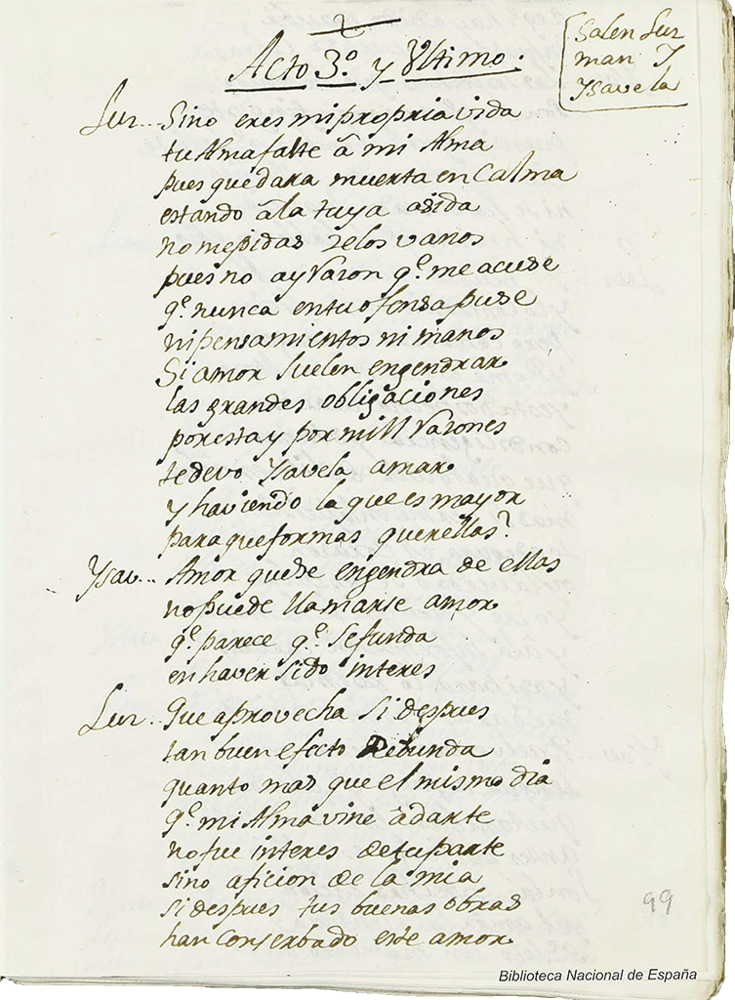
Otros manuscritos de muchísimo valor textual, es decir, copias muy buenas, son los que realizaron algunos copistas por encargo de coleccionistas de obras de Lope de Vega. Los modelos que se utilizaron para la realización de esos manuscritos fueron los propios autógrafos de Lope.
En ocasiones, esos autógrafos se perdieron con el tiempo, pero en cambio seguimos disponiendo de estos manuscritos apógrafos.
Son muy importantes y de gran calidad textual dos colecciones: los que conocemos como «manuscritos Gálvez» y los «manuscritos Sanz de Pliegos», copiados en el siglo XVIII por encargo de coleccionistas nobles y por los copistas que les dan nombre.
c. Otros manuscritos
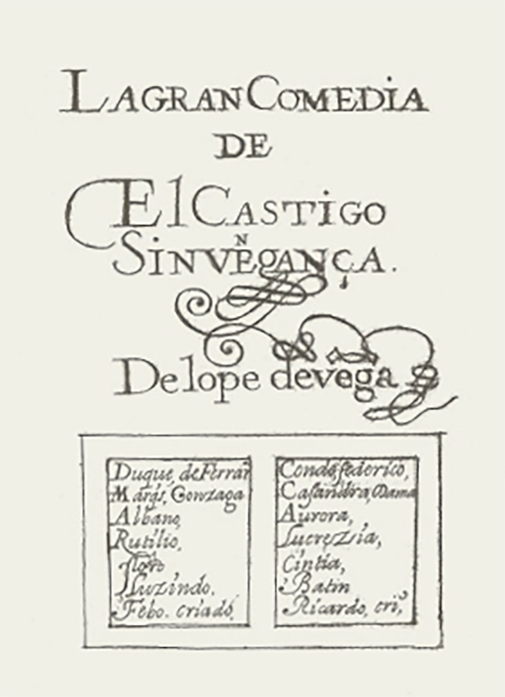
Es muy grande la variedad de manuscritos de obras dramáticas de Lope, y también muy diversa su calidad textual. Existen manuscritos muy cercanos al original, aunque no podamos asegurar que sean copia directa de él (como ocurría con los apógrafos), manuscritos copiados para ser puestos en escena con las modificaciones propias de esa labor (acortamiento de escenas, variación o reducción de personajes, de lugares de la ficción dramática, pasajes censurados, etc.), manuscritos que son copiados de impresos o incluso manuscritos «pirateados», tomados de memoria, según se decía, mientras se asistía al espectáculo.
Conforme nos alejamos del manuscrito original autógrafo van aumentando nuestras dudas respecto a la autenticidad y calidad del texto. ¿Refleja exactamente lo que Lope escribió o hay errores e intervenciones ajenas a Lope de por medio?
II. Los impresos
a. Las Partes de comedias al margen del control de Lope (1603–1617)
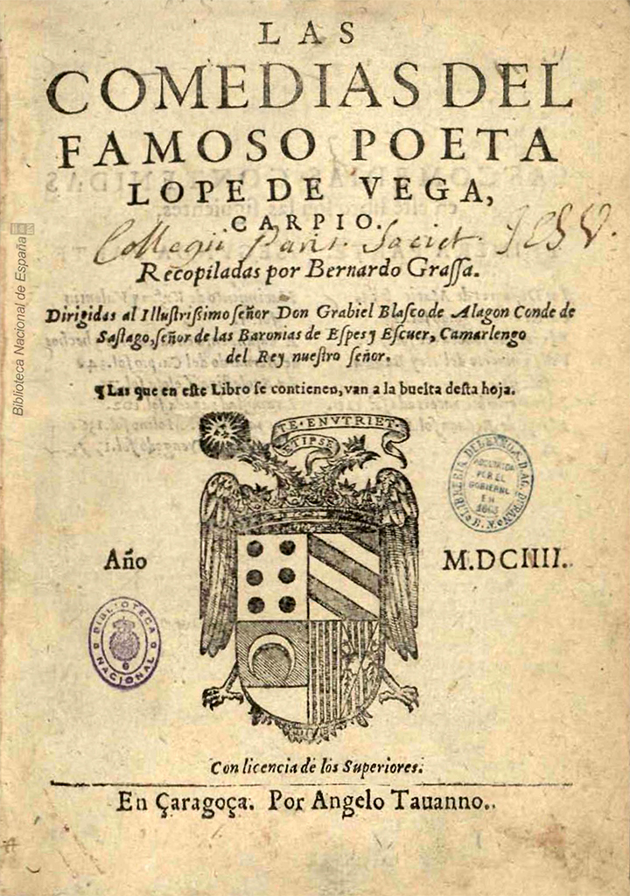
Las primeras ediciones impresas de las comedias de Lope de Vega nacieron al margen de su iniciativa y de su control. En 1603 se publica en Lisboa y Madrid un volumen titulado Seis comedias de Lope de Vega, por Pedro Crasbeeck a costa de Francisco López. En realidad, solo una de las comedias recogidas en el volumen es de Lope: El perseguido.
Al año siguiente, 1604, se imprime en Zaragoza una colección titulada Las comedias del famoso poeta Lope de Vega Carpio (por el tipógrafo y mercader de libros Angelo Tavanno): así nace la serie de las que conocemos como Partes de comedias, ya que, ahora sí, todas y cada una de las doce comedias incluidas en este libro eran efectivamente de Lope (por eso el volumen es también conocido como la «Primera parte de las comedias de Lope de Vega» a pesar de no ser este su título).
Las Partes de comedias, que recogían doce comedias por volumen, se convierten en un éxito y prácticamente en un género editorial en que se publicarán también después las obras de otros autores (Guillén de Castro, «Tirso», Calderón, las de Los mejores ingenios, etc.).
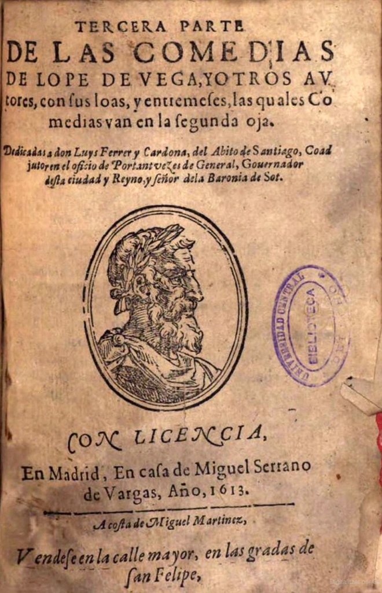
La calidad textual de estos impresos es variable y en algunos casos deja mucho que desear: lo habitual era que las comedias que se imprimían procedieran de copias corrompidas después de haberse puesto en escena. E incluso, como ocurre en las Partes Tercera y Quinta, igual que había ocurrido en 1603, se habían mezclado textos de Lope con los de otros autores con títulos engañosos utilizando como reclamo al Fénix de los ingenios.
Por eso el dramaturgo madrileño, cansado de la situación y quejoso de ella en múltiples textos desde 1604, en 1616 presenta una súplica a las autoridades pidiendo que se impida la impresión de las partes de comedias VII y VIII, que había iniciado un mercader de telas, Francisco de Ávila, quien había comprado los manuscritos a los directores de compañías teatrales y estaba tramitando y preparando ya la edición. En su súplica decía Lope que muchas de las comedias que se imprimían a su nombre eran ajenas, y que las propias se imprimían «muy contrarias a sus originales».
Lope perdió el pleito porque todos los procesos de compra y venta habían sido regulares y él había quedado enajenado de su bien al venderlo al director de la compañía de teatro. Pero, perdida la batalla, ganó la guerra. A los directores de compañías teatrales les interesaba mantener buenas relaciones con el mejor dramaturgo del momento, y a partir de 1617 y de la Novena parte toma el control y se involucra en la edición de sus obras, por mucho que inicialmente las concibiera para ser puestas en escena y no para ser publicadas impresas.
b. Las Partes de comedias bajo control de Lope (1617–1635)
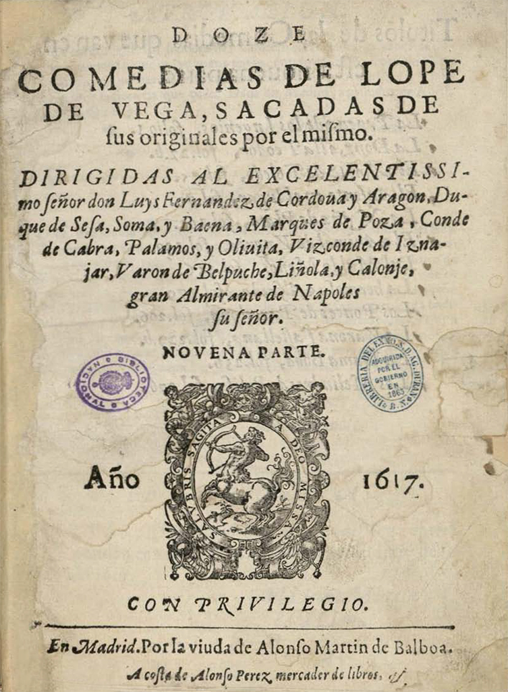
Aunque ya antes de esta ocasión algunos volúmenes habían ostentado en el título la frase «sacadas de sus originales» (en las partes Cuarta y segunda edición madrileña de la Sexta, cuya calidad textual efectivamente lleva a sospechar ya alguna participación de Lope o una preocupación por la calidad del texto), ahora añade «por él mismo». Tenemos rastros de su involucración incluso en su correspondencia con el duque de Sessa, que también hizo de proveedor de manuscritos originales, pues los había comprado a los directores de compañía y coleccionado. Así van apareciendo las partes Novena (1617), Décima (1618), Oncena (1618), Docena (1619)…
Pero incluso con el deseo de ofrecer buenos textos e implicarse para ello personalmente, no siempre lo consigue. En la Novena, por ejemplo, incluye La dama boba por su indiscutible valor literario; pero, como el manuscrito original se lo había regalado a Jerónima de Burgos, actriz con la que en el momento de la escritura y estreno tenía relaciones amorosas y, al llegar el momento de la publicación impresa, había roto ya con ella, tuvo que servirse de un manuscrito de menor valor, tal vez incluso relacionado con esa actividad de copias «piratas» de las comedias que llevaban a cabo los memoriones, esos personajes que decían poder retener una comedia en la memoria sólo con asistir a su representación.
En la Trecena parte (Viuda de Alonso Martín, 1620) se lamentaba Lope de las dificultades que ya estaba encontrando en ocasiones para recuperar buenas copias de sus comedias, a pesar de las muchas que había escrito. También en otros lugares Lope y sus corresponsales dejan constancia de la fatiga que para él llegó a implicar esa labor. Por eso, aunque es cierto que Lope se preocupó por la calidad de los textos que se imprimían en las Partes de sus comedias, a veces la advertencia «sacadas de sus originales por él mismo» hay que tomarla con precaución y estudiar bien los textos que nos brindan.
Se van sucediendo las Partes hasta 1625 en que aparece la Parte veinte. En menos de ocho años Lope había publicado doce partes de comedias con mayor o menor ritmo pero sin interrupción. Pero en marzo de 1625 la Junta de Reformación emitía una instrucción: «porque se ha reconocido el daño de imprimir libros de comedias, novelas ni otros deste género, por el que blandamente hacen a las costumbres de la juventud, se consulte a su Majestad ordene al Consejo que en ninguna manera se dé licencia para imprimirlos». Esta restricción legal durará hasta 1634, y en 1635, año de la muerte del dramaturgo, se comienzan a conceder de nuevo licencias.
c. Las Partes extravagantes, póstumas, las sueltas y otras colecciones
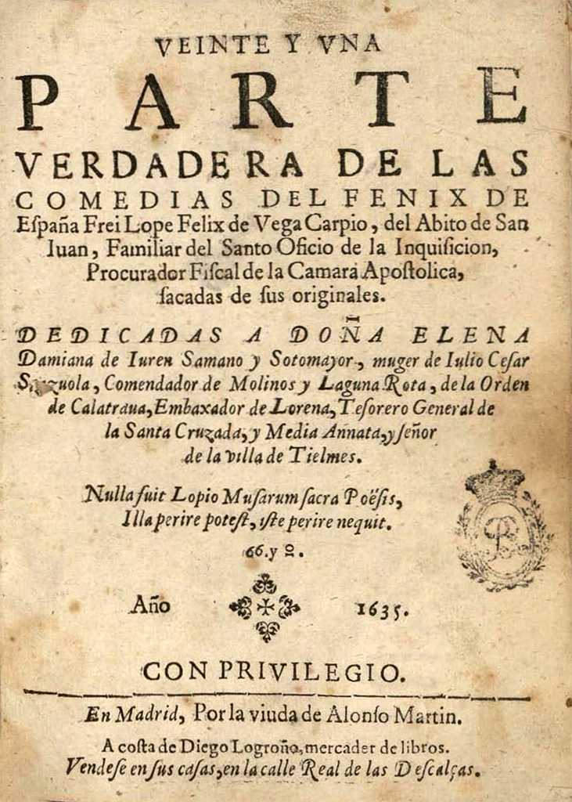
La prohibición favoreció, paradójicamente, que aparecieran comedias falsamente atribuidas a Lope y publicadas ilegalmente en Andalucía: así surgieron toda una serie de partes «extravagantes» de comedias de Lope y otros autores a veces en textos muy estragados o con atribuciones falsas. Y de aquí nacieron también, además, nuevas colecciones de tomos de doce comedias de varios o diferentes autores cuyas series se prolongarían más allá de la prohibición.
Frente a estos volúmenes que menudearon en Aragón o en Andalucía (con preliminares falsos) y que plantean un complejo problema bibliográfico, se establece la continuidad de la serie legítima de Partes auténticas (ciertamente con algún desliz, como una comedia de Ruiz de Alarcón). Aunque la Parte XX fue la última publicada en vida de Lope, lo cierto es que antes de morir ya había pedido y obtenido licencia (en mayo y junio de 1635; él muere en agosto) para imprimir las Partes XXI y XXII. El día antes de morir, Lope se preocupa también de su legado literario y editorial y al dictar testamento hay testigos a los que deja encargados de continuar la labor. Están también preparadas para la edición, según la voluntad del autor, La vega del Parnaso (publicada en 1637) y las Fiestas del Santísimo Sacramento. El yerno de Lope promueve la edición de la Parte XXIII (Pedro Coello, 1638). Por iniciativa de Pedro Verges aparece en Zaragoza la Parte XXIV (Pedro Verges, 1641), en la que pudo estar también implicado uno de los testigos testamentarios, el sacerdote José Ortiz de Villena. Se considera que la serie de Partes de comedias auténticas de Lope termina con la Parte XXV (Roberto Deuport, Zaragoza, 1647).
Excepcionalmente, en vida de Lope se publica alguna comedia suelta, como El castigo sin venganza, en Barcelona en 1634, seguramente para sortear la prohibición y por iniciativa del propio poeta. Las comedias sueltas se multiplicaron, aunque Lope no fue de los autores más impresos en este formato. Sea como fuere, Lope siguió imprimiéndose a lo largo del siglo XVIII y XIX pero por lo general sin una preocupación por la calidad de los textos, que se iban deturpando cada vez más.
III. La edición del teatro de Lope con criterios filológicos
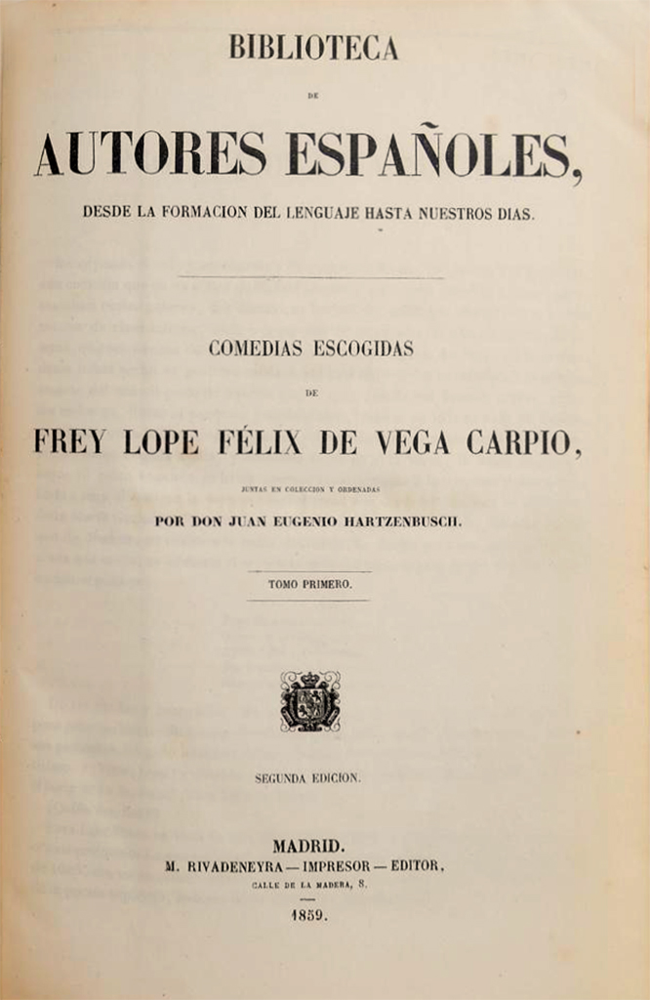
Superada la mitad del siglo XIX, en 1860, la Real Academia Española se plantea en sus reuniones la necesidad de afrontar desde un punto de vista científico el reto de editar el teatro completo de Lope, y en 1889 se produce la provisión económica y se encarga ya el proyecto a Marcelino Menéndez y Pelayo. Las ediciones de éste, y las de Juan Eugenio Hartzenbusch para la Biblioteca de Autores Españoles, así como la nueva edición de la RAE con que luego continuó la labor de Menéndez Pelayo en torno a 1930 Emilio Cotarelo en colaboración con Federico Ruiz Morcuende, Ángel González Palencia y Justo García Soriano, fueron las más completas que durante mucho tiempo pudieron consultarse.
Pero pasados cien años a la altura de 1989 esas ediciones, que habían utilizado métodos científicos ya periclitados y que presentaban más de una deficiencia, eran las únicas que se podían consultar y en las que se podía leer una colección amplia —ni siquiera completa— de la obra dramática de Lope.
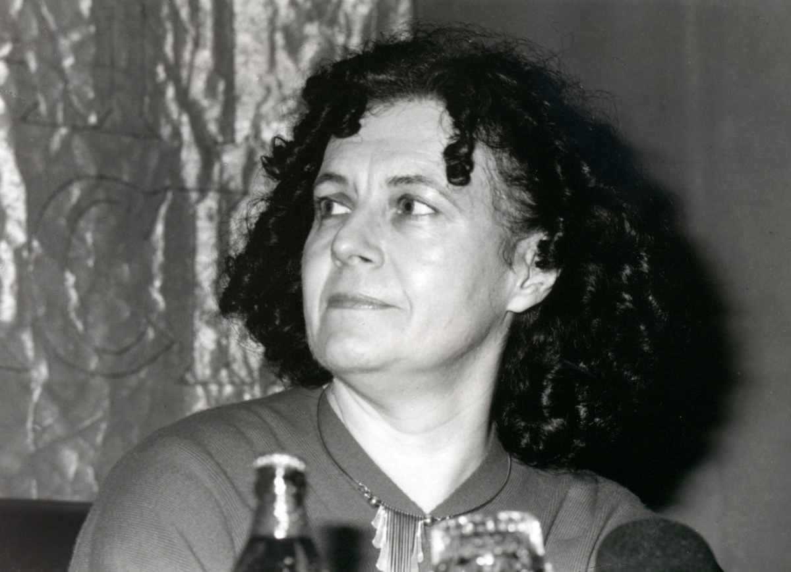
Todavía a inicios de los años noventa del siglo XX Maria Grazia Profeti, Premio Nacional de Bibliografía en 1998 y cuya trayectoria científica indiscutible de dedicación al estudio y difusión del teatro del Siglo de Oro ha sido homenajeada por la red TC/12 en 2013, se planteaba la escasez y carencias de ese «repertorio de lectura» del teatro de Lope: «la tendencia más acusada es la reiterada propuesta de textos bien conocidos (por ejemplo, se continúa presentando Fuenteovejuna, El caballero de Olmedo, El castigo sin venganza, etc.). Lo más grave es que sigue faltando un proyecto editorial serio y programado que prevea la edición crítica del corpus dramático de Lope; se da así el caso —único creo en todas las literaturas nacionales europeas— de un autor fundamental que sigue circulando en ediciones desacreditadas o por lo menos que obedecen a criterios ecdóticos decimonónicos, completamente superados desde un punto de vista científico».
Aunque el libro en que se publicaban estas palabras apareció en 1992 (el Primer suplemento coordinado por Aurora Egido de la fundamental Historia y crítica dirigida por F. Rico, p. 173), seguramente el periodo que estudió para realizar el balance abarcaba desde 1983 hasta 1988. Desde luego, por ese entonces, tenía razón la filóloga florentina. Eran muchas, muchísimas, las obras que no podían leerse sino en ediciones de finales del siglo XIX o inicios del XX, gracias sólo a las citadas ediciones de Menéndez Pelayo, Emilio Cotarelo y Mori o Juan Eugenio Hartzenbusch. Si partimos del año siguiente, 1989, y llegamos hasta el día de hoy, podríamos decir sin asomo de duda que el panorama ha cambiado radicalmente por varios factores, que van desde iniciativas individuales, hasta la concepción de proyectos de edición ambiciosos y coordinados, precisamente aquello cuya falta se denunciaba.
Los años noventa: un nuevo panorama
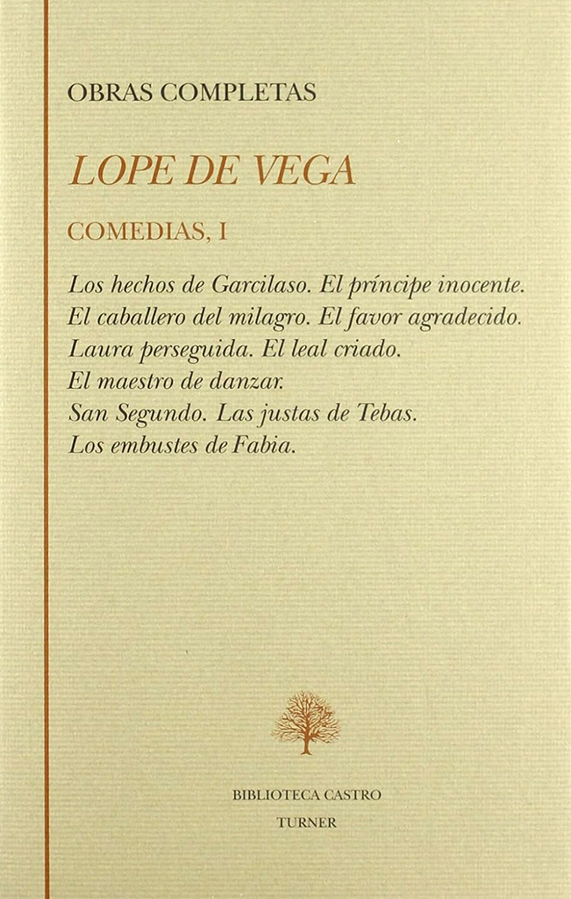
Hay que decir sin embargo que los años noventa implicaron un cambio crucial en la situación por varias razones y lo que entonces era necesario denunciar, sería injusto repetirlo hoy. En primer lugar, podemos percibir que hay un aumento, que luego experimenta incluso una aceleración a partir del año 2000, en el interés de los filólogos por cubrir esa laguna. Son muchos los estudiosos (entre otros la propia Profeti y alumnos formados por ella) que han decidido realizar ediciones académicas y con rigor filológico de obras que no pertenecían al clásico canon de Lope.
Porque ocurre que, además, en los años noventa, empiezan a ver la luz los volúmenes de dos colecciones que aspiran a ofrecer en textos fiables la edición del teatro completo del Fénix de los ingenios. Una colección nace en el ámbito de la Fundación José Antonio de Castro: en la Biblioteca Castro se aspira a publicar la obra completa de Lope de Vega. Los encargados de llevar a cabo la edición del teatro son Jesús Gómez y Paloma Cuenca.
En el trienio 1993-1995 aparecen los doce primeros volúmenes de esta colección, y en el bienio 1997-1998 los volúmenes XIII al XV, a razón de diez comedias por volumen, lo que suman ciento cincuenta comedias en total, pues la colección quedó interrumpida en esa fecha. El orden de publicación de las comedias es el de la cronología establecida por Morley y Bruerton. Cada volumen se compone de un prólogo común en el que a cada una de las comedias se le dedican unos pocos párrafos.
Las comedias aparecen tipográficamente limpias, sin marcas, número de verso, notas ni aparato crítico. En este sentido, aunque según sostenían, se basaran en testimonios antiguos, no es posible considerar este proyecto como un proyecto de edición crítica ni parece haber sido su objetivo. Sea como sea, se pusieron al alcance del público en brevísimo tiempo ciento cincuenta comedias de Lope, lo cual es ya de por sí un notable esfuerzo.
d. El proyecto de investigación y edición PROLOPE
Origen
La otra colección que aspira a ofrecer la producción dramática íntegra es la que acomete el Grupo de Investigación PROLOPE en 1989. Volvamos de nuevo un momento la mirada atrás, al año 1989, el punto de partida que habíamos establecido para este «estado de la cuestión» o «estado de la edición» del repertorio de lectura de Lope. Recordemos que Profeti decía: «Lo más grave es que sigue faltando un proyecto editorial serio y programado que prevea la edición crítica del corpus dramático de Lope». Pues bien, es justo en 1989 cuando se crea y empieza a trabajar nuestro Grupo de Investigación, PROLOPE.
Cuando Alberto Blecua concibió el reto de editar críticamente el teatro de Lope de Vega la tarea se auguraba entre titánica y quimérica. Era entonces cuando escribía la frase antes recordada: «la abundancia de Lope abruma».
Método de trabajo
Desde el principio, en un proyecto que se planteaba realizar la edición crítica de esa abundante obra, más de trescientas obras de autoría segura, de las cuales más del 80% se transmitieron en las Partes de comedias de Lope de Vega, la estrategia fue clara: el texto base para la mayoría de las comedias iba a ser el que aparecía en la Parte. Para establecer bien el stemma y transmisión textual de la mayoría de las comedias, había que proceder por Partes, y a su vez, para establecer el stemma de la Parte, lógicamente, había que proceder en conjunto, tomándola como un todo. Cada comedia, en ese testimonio común que compartían las doce, la Parte, señalaría a un stemma o proceso de transmisión que sería confirmado por el resto. Así nos asegurábamos de establecer rigurosamente el texto de la gran mayoría de las comedias. Y si por Partes había que proceder por una razón científica en la que el criterio de decisión, lógicamente, era el de la historia de la transmisión textual, entonces lo lógico, parecía, también, era seguir el orden de publicación original de las mismas: Primera, Segunda, Tercera…
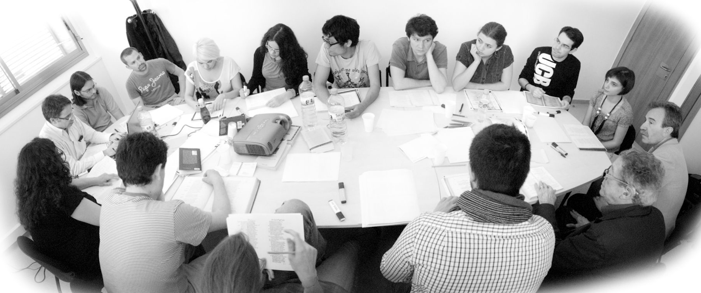
Para la realización de las ediciones críticas es necesaria, por tanto, una previa labor de localización y acopio de testimonios en bibliotecas de todo el mundo: todas las ediciones de la Parte así como todas las ediciones individuales y manuscritos que transmiten cada comedia. Tras ello se lleva a cabo el cotejo, la filiación, elección del texto base (excepcionalmente se opta por la edición de varias versiones) y fijación de un texto crítico depurado de errores y erratas y adecuadamente modernizado en la grafía y puntuación según los criterios establecidos por PROLOPE. El aparato crítico que resulta de la exhaustiva colación practicada con impresos y manuscritos se reproduce a pie de página para la rápida consulta del lector interesado en los problemas textuales que presenta la transmisión de las obras.
Notas, prólogos y apéndices
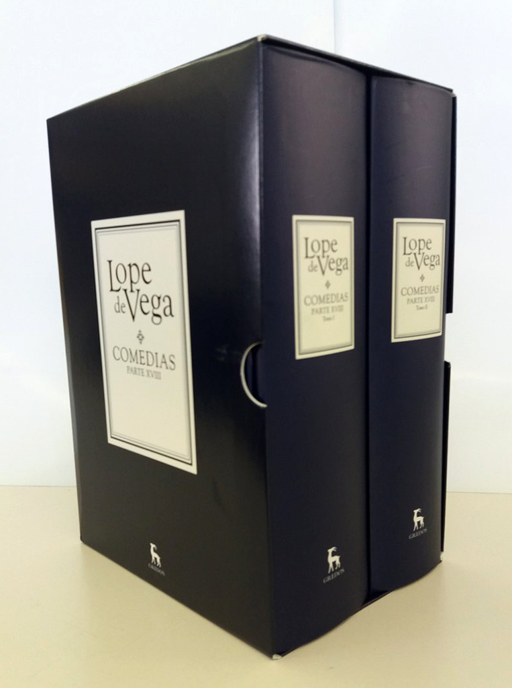
Desde la Parte X PROLOPE optó por ofrecer también todas las notas aclaratorias semánticas, relativas a realia, decisiones textuales, lugares paralelos, figuras, ortología, alusiones culturales, etc. a pie de página, para la plena comprensión del texto en su contexto. Además, se ofrecen en apéndice índices onomásticos, variantes lingüísticas, erratas de los impresos de la Parte y, claro está, la bibliografía.
Los prólogos individuales para cada una de las comedias buscan la brevedad y abordan cuestiones como las fechas de composición, relaciones con otras comedias, fuentes del argumento o motivos concretos, consideraciones de la crítica y nuevas propuestas de interpretación. En una sección específica se estudian los problemas textuales en relación con un análisis de los testimonios antiguos y las ediciones modernas no comunes a las demás comedias de la Parte. Al final se ofrecen un argumento y una sinopsis de la versificación.
Además del prólogo a cada comedia, en las ediciones de las Partes de comedias de PROLOPE se ofrece una introducción general a la misma. Es ahí donde se realiza la filiación de las distintas ediciones de la Parte, un stemma que es común y válido, en principio, para todas las comedias que recogía. En ese prólogo se ofrecen también consideraciones sobre la concepción literaria de la Parte, si es que la selección de comedias respondió a un preciso criterio, y la descripción bibliográfica analítica de los testimonios localizados y utilizados, y se editan asimismo los preliminares de las ediciones antiguas normalmente sobre la base de la princeps.
e. Un proyecto a largo plazo y un trabajo en equipo
El otro pilar del proyecto consiste en el trabajo en equipo. El corpus es de tal magnitud que parece inabarcable a corto plazo de modo riguroso por un grupo reducido de personas. En nuestro sistema de trabajo, cada Parte es dirigida científica y editorialmente por un coordinador (o dos) de reconocido prestigio y probada experiencia, que vela por la corrección de todo el trabajo filológico del conjunto: desde el acopio de testimonios (ediciones antiguas y modernas así como manuscritos), pasando por la fijación de los textos hasta los más mínimos detalles de anotación y elaboración de los distintos apéndices (de variantes lingüísticas, nombres propios, erratas) y los prólogos de presentación. Todas las ediciones son supervisadas nuevamente desde la sede central del grupo, y remitidas ya para su publicación.
Este sistema supone la asignación de coordinaciones de Parte y de comedias con una antelación de unos cuatro o cinco años, de modo que en todo momento hay colaborando en esta magna tarea unos 60, si no más, filólogos de todo el mundo. Y poco a poco, más despacio al principio, tras un laborioso proceso en que se establecieron unos criterios de transcripción y edición y aparecieron las primeras partes (en 1997 apareció la Primera Parte de las Comedias), y a velocidad de crucero después (a Parte por año desde 2007), hemos alcanzado la edición de 137 comedias y la Parte XIII; además de El castigo sin venganza, La creación del mundo y El maestro de danzar, así como la recientemente descubierta Mujeres y criados. Entre los títulos que ya han aparecido se pueden contar varios que estaban en el canon (Fuenteovejuna, Peribáñez, El perro del hortelano, etc.), pero también muchos otros que merecerían mayor atención, así como otros menos significativos. Hemos ampliado asimismo en ediciones fiables enormemente ese «repertorio de lectura» del que veníamos hablando.